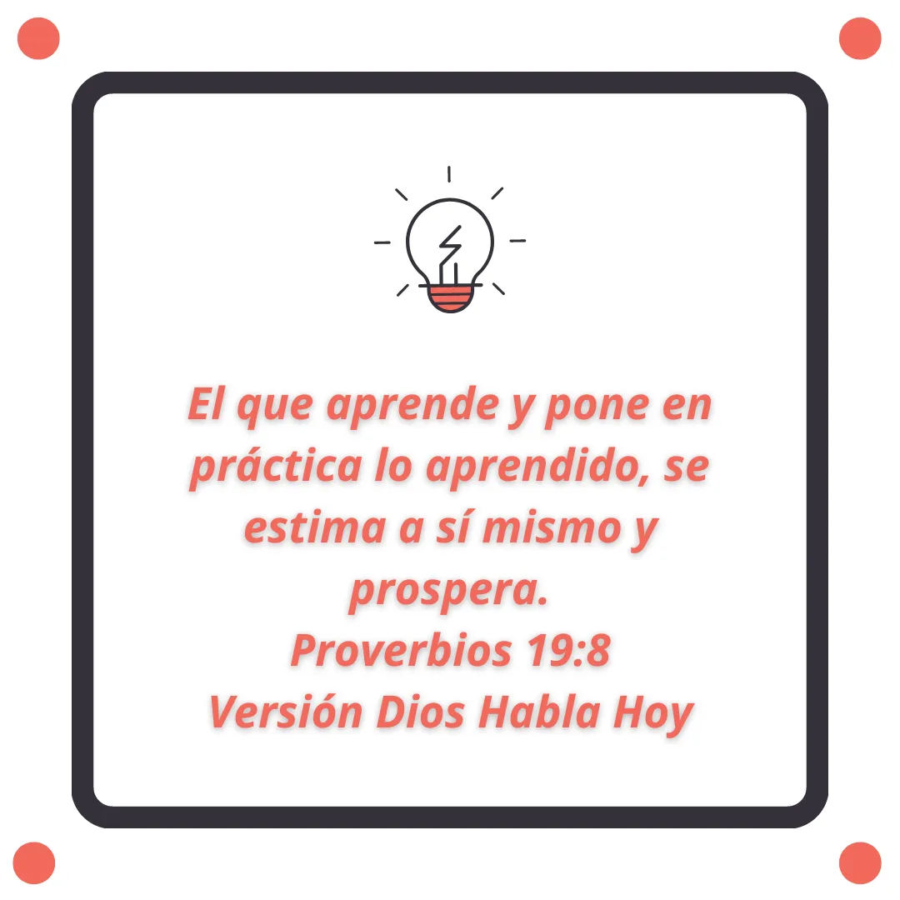
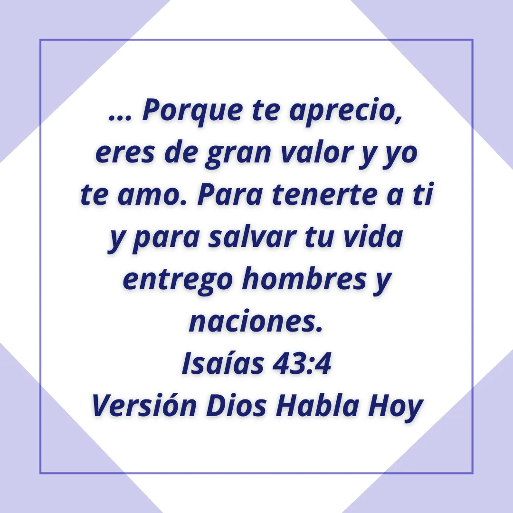
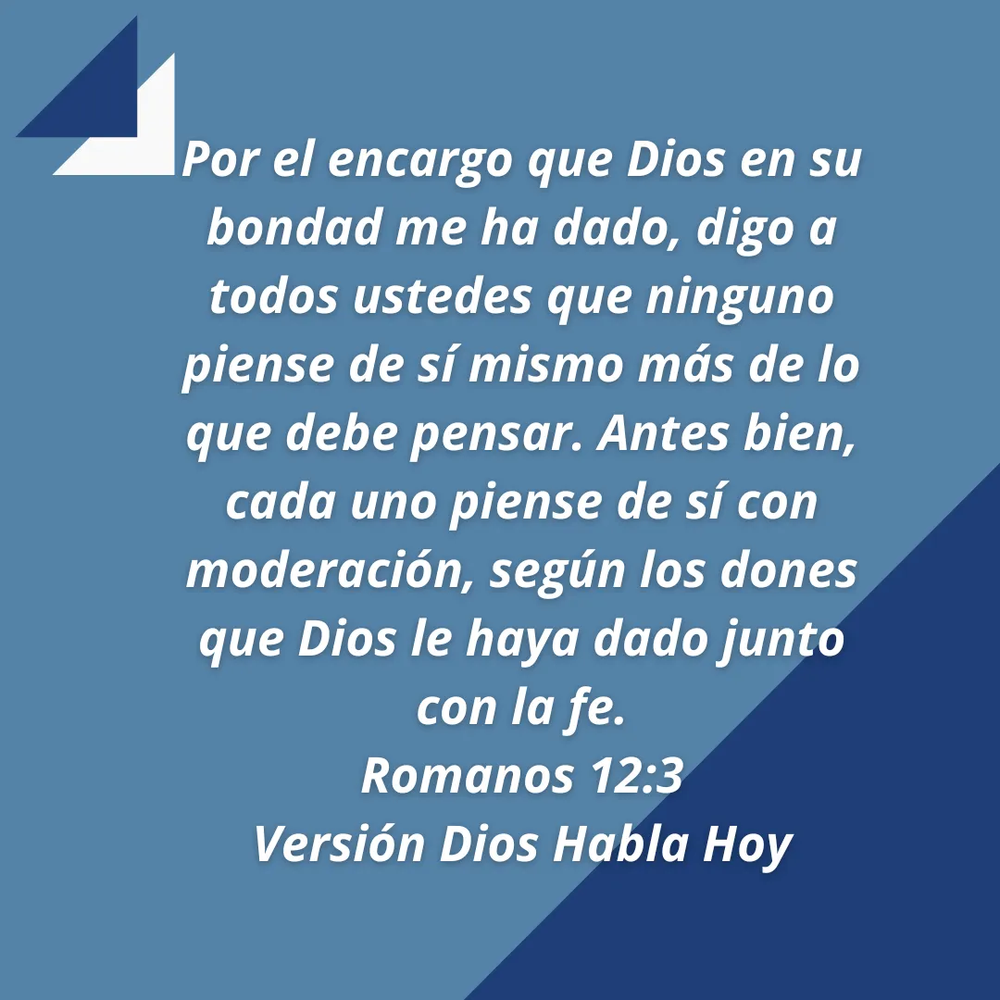
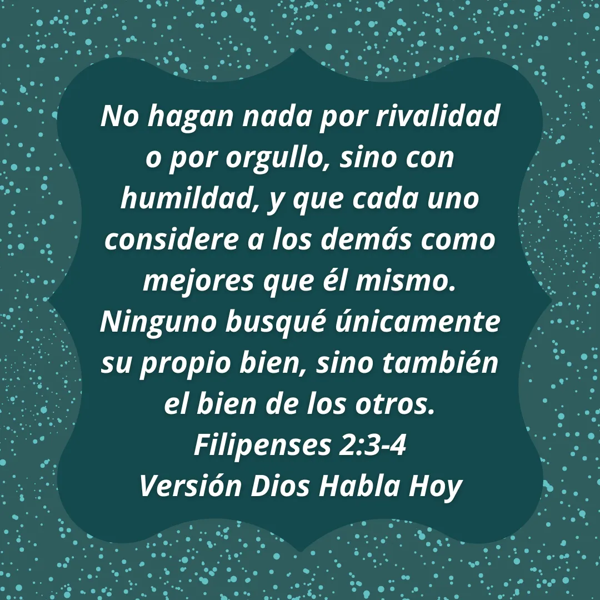
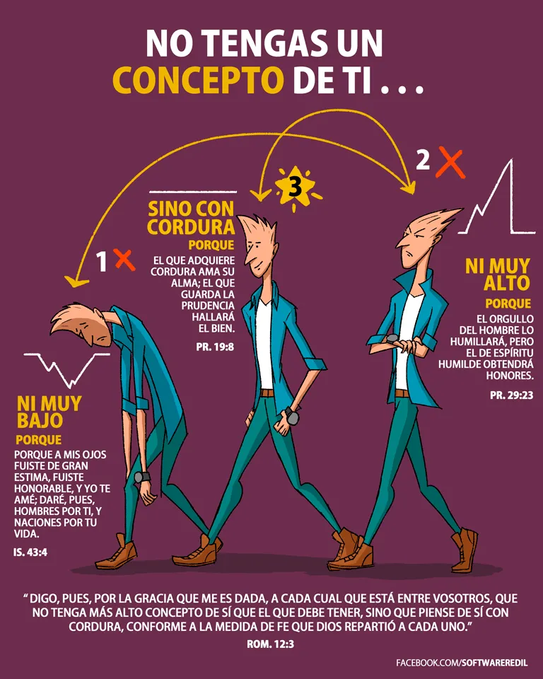

Autoconcepto
Ya entendemos quienes somos verdaderamente en Dios. Esa verdad nos permite tener libertad y seguridad de ser hijos de Dios y las dádivas que consigo trae ese privilegio, pues fue por su gracia y favor inmerecidos que nos dio ese derecho.
Ahora, es importante que vivamos en esa verdad para así apreciar, cuidar y amar que fuimos creados a imagen y semejanza de Dios, que ninguno de nosotros es un error, que nuestra vida es valiosa, que fuimos diseñados para dar gloria y exaltación al Rey de reyes y Señor de señores, que debemos ofrecer nuestra vida como ofrenda viva, santa y agradable a Él.
De acuerdo con Arturo Torres autor del artículo las 5 diferencias entre autoconcepto y autoestima publicado en el portal web Psicología y Mente, la definición de autoconcepto es:
“El conjunto de ideas y creencias que constituyen la imagen mental de lo que somos según nosotros mismos.”
Existen tres tipos de autoconcepto:
- Demasiado bajo, en el que no tienes un buen concepto de ti.
- Moderado, en el que tienes un concepto sensato de ti.
- Demasiado alto, en el que tienes un concepto muy orgulloso de ti.
Lo ideal es tener un autoconcepto moderado, sensato, con cordura, que siempre va a buscar hacer lo bueno, lo correcto, lo justo, lo que es agradable para Dios. Para ello, leamos lo que dice la Santa Palabra de Dios respecto a este tema:





Gracias a Software Redil por compartir su imagen con nosotros. Facebook @SoftwareRedil
Oración: Gracias Amado Dios porque me aprecias, soy de gran valor para ti y me amas. Gracias porque me has dado el derecho de ser tu hijo, de tener una nueva vida en Cristo y quiero rendir mi vida a ti como ofrenda y sacrificio de olor agradable. Ayúdame y guíame con la dulce voz del Espíritu Santo para que me enseñe a tener un concepto sensato de mí, a ser humilde, a amarme, a cuidarme, a respetarme, a tener la misma manera de pensar de quien está unido a Cristo Jesús. Reconozco que me has hecho templo y morada del Espíritu Santo, que soy hechura tuya, creados en Cristo Jesús para buenas obras y quiero someter mis pensamientos a Cristo para que lo obedezca a él. En tu nombre Señor Jesucristo. Amén.